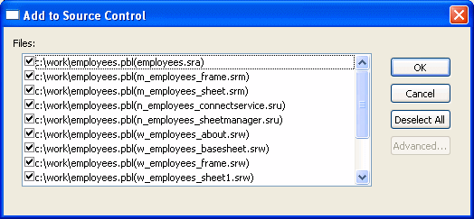
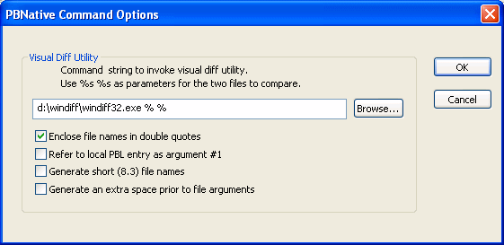

The following source control operations are described in this section:
Source control operations on workspace and PBL files are performed on the objects contained in the current workspace or in target PBLs, not on the actual PBW and PBL files. The PBW and PBL files cannot be added to source control through the PowerBuilder interface. Source control operations are not enabled for target PBD files or for any of the objects in target PBD files.
You add an object to your source control project by selecting the Add To Source Control menu item from the object's pop-up menu in the System Tree or in the Library painter. You can also select an object in a Library painter view and then select Entry>Source Control>Add To Source Control from the Library painter menu bar.
When you add an object to source control, the icon in front of the object changes from a plus sign to a green dot, indicating that the object on the local machine is in sync with the object on the server.
PowerBuilder creates read-only object files in the local root directory for each PowerBuilder object that you add to source control. These files can be automatically deleted if you selected the Delete PowerBuilder Generated Object Files option as a source control connection property (although you cannot do this for certain SCC systems such as Perforce or ClearCase).
Read-only attributes are also assigned to any Web target files that you add to source control. Read-only attributes are not changed by PowerBuilder if you later remove a workspace containing these files from source control.
If the object you select is a PowerBuilder workspace, a dialog box displays listing all the objects for that workspace that are not currently under source control (although the workspace PBW and target PBLs are not included in the list). If the object you select is a PowerBuilder target, and at least one of the objects in that target has not been registered with the current source control project, PowerBuilder displays a dialog box that prompts you to:
If you select the multiple files radio button, another dialog box displays with a list of objects to add to source control. A check box next to each object lets you select which objects you want to add to source control. By default, check boxes are selected for all objects that are not in your source control project. They are not selected for any object already under source control.

You can resize all source control dialog boxes listing multiple files by placing a cursor over the edge of a dialog box until a two-headed arrow displays, then dragging the edge in the direction of one of the arrow heads.
 Selecting multiple files from a PBL If you select Add To Source Control for a target PBL, you immediately see the list
of multiple files from that PBL in
the Add To Source Control dialog box. There is no need for an intervening
dialog box as there is for a target or workspace, since you cannot
register a PBL file to source
control from the PowerBuilder UI—you can only register
the objects contained in that PBL.
Selecting multiple files from a PBL If you select Add To Source Control for a target PBL, you immediately see the list
of multiple files from that PBL in
the Add To Source Control dialog box. There is no need for an intervening
dialog box as there is for a target or workspace, since you cannot
register a PBL file to source
control from the PowerBuilder UI—you can only register
the objects contained in that PBL.
You can also select multiple objects to add to source control from the List view of the Library painter (without selecting a workspace, target, or PBL).
The Add To Source Control menu item is disabled for all objects that are registered in source control except workspaces and targets. If you select the Add To Source Control menu item for a workspace or target in which all the objects are already registered to source control, PowerBuilder displays the Add To Source Control dialog box with an empty list of files. You cannot add objects to your source control project that are already registered with that project.
When you add a target or an object (in a target that is not under source control) to source control, PowerBuilder creates a PBG file. A PBG file maps objects in a target to a particular PBL in a PowerScript target. One PBG file is created per PBL, so there can be multiple PBG files per PowerScript target. PBG files are also used to list target directories and subdirectories for Web targets, but there is only one PBG file per Web target.
If a PBG file already exists for a target PBL containing the object you are adding to source control, PowerBuilder checks the PBG file out of source control and adds the name of the object to the names of objects already listed in the PBG file. It then checks the PBG file back into source control.
The PBG files are used by PowerBuilder to make sure that objects are distributed to the correct PBLs and targets when you check the objects out (or get the latest versions of the objects) from source control.
If your source control system requires comments on registration and check-in, you get separate message boxes for the PBG file and the objects that you are adding to source control. If your source control system gives you the option of adding the same comments to all the objects you are registering, you can still get additional message boxes for PBG files, since PBG files are checked in separately.
Because it is possible for PBG files to get out of sync, it is important that the project manager monitor these files to make sure they map all objects to the correct PBLs and contain references to all objects in the source control project. However, you cannot explicitly check in or check out PBG files through the PowerBuilder SCC API.
For more information on modifying PBG files, see "Editing the PBG file for a source-controlled target".
When you check out an object, PowerBuilder:
If you select the Check Out menu item for a PowerBuilder target that is not already checked out, and at least one of the objects in that target is available for checkout, PowerBuilder displays a dialog box that prompts you to:
If you select the multiple file option, or if the target file is already checked out, the Check Out dialog box displays the list of objects from that target that are available for checkout. A check box next to each object in the list lets you choose which objects you want to check out. By default, check boxes are selected for all objects that are not currently checked out of source control.
The Deselect All button in the Check Out dialog box lets you clear all the check boxes with a single click. When none of the objects in the list is selected, the button text becomes Select All, and you can click the button to select all the objects in the list.
You can also select multiple objects (without selecting a target) in the List view of the Library painter. The PowerBuilder SCC API does not let you check out an object that you or someone else has already checked out or that is not yet registered with source control. If you use multiple object selection to select an object that is already checked out, PowerBuilder does not include this object in the list view of the Check Out dialog box.
Checking out an object from a source control system usually prevents other users from checking in modified versions of the same object. Some source control systems, such as Serena Version Manager (formerly Merant PVCS) and MKS Source Integrity, permit multiple user checkouts. In these systems, you can allow shared checkouts of the same object.
By default, PowerBuilder recognizes shared checkouts from SCC providers that support multiple user checkouts. PowerBuilder shows a red check mark as part of a compound icon to indicate that an object is checked out to another user in a shared (nonexclusive) mode. You can check out an object in shared mode even though another user has already checked the object out.
 Managing multiple user check-ins If you allow multiple user checkouts, the SCC administrator
should publish a procedure that describes how to merge changes to
the same object by multiple users. Merge functionality is not automatically
supported by the SCC API, so checking in an object in shared mode
might require advanced check-in features of the source control system.
Merging changes might also require using the source control administration
utility instead of the PowerBuilder user interface.
Managing multiple user check-ins If you allow multiple user checkouts, the SCC administrator
should publish a procedure that describes how to merge changes to
the same object by multiple users. Merge functionality is not automatically
supported by the SCC API, so checking in an object in shared mode
might require advanced check-in features of the source control system.
Merging changes might also require using the source control administration
utility instead of the PowerBuilder user interface.
If your SCC provider permits multiple user checkouts, you can still ensure that an item checked out by a user is exclusively reserved for that user until the object is checked back in, but only if you add the following instruction to the Library section of the PB.INI file:
[Library]
SccMultiCheckout=0
After you add this PB.INI setting, or if your SCC provider does not support multiple user checkouts, you will not see the compound icons with red check marks, and all items will be checked out exclusively to a single user. For source control systems that support multiple user checkouts, you can re-enable shared checkouts by setting the SccMultiCheckout value to 1 or -1.
If your source control system supports branching and its SCC API lets you check out a version of an object that is not the most recent version in source control, you can select the version you want in the Advanced Check Out dialog box (that you access by clicking the Advanced button in the Check Out dialog box). When you select an earlier version, PowerBuilder displays a message box telling you it will create a branch when you check the object back in. You can click Yes to continue checking out the object or No to leave the object unlocked in the source control project. If this is part of a multiple object checkout, you can select Yes To All or No To All.
 If you want just a read-only copy of the latest version
of an object Instead of checking out an object and locking it in the source
control system, you can choose to get the latest version of the
object with a read-only attribute. See "Synchronizing objects with
the source control server".
If you want just a read-only copy of the latest version
of an object Instead of checking out an object and locking it in the source
control system, you can choose to get the latest version of the
object with a read-only attribute. See "Synchronizing objects with
the source control server".
 To check out an object from source control:
To check out an object from source control:
Right-click the object in the System Tree or in a Library painter view and select Check Out from the pop-up menu
or
Select the object in a Library painter view and select Entry>Source Control>Check Out from the Library painter menu.
The Check Out dialog box displays the name of the object you selected. For PowerScript objects, the object listing includes the name of the PBL that contains the selected object.
If you selected multiple objects, the Check Out dialog box displays the list of objects available for checkout. You can also display a list of available objects when you select a target file for checkout. A check mark next to an object in the list marks the object as assigned for checkout.
Make sure that the check box is selected next to the object you want to check out, and click OK.
When you finish working with an object that you checked out, you must check it back in so other developers can use it, or you must clear the object's checked-out status. You cannot check in objects that you have not checked out.
 If you do not want to use the checked-out version Instead of checking an entry back in, you can choose not to
use the checked-out version by clearing the checked-out
status of the entry. See "Clearing the checked-out
status of objects".
If you do not want to use the checked-out version Instead of checking an entry back in, you can choose not to
use the checked-out version by clearing the checked-out
status of the entry. See "Clearing the checked-out
status of objects".
If you select the Check In menu item for a workspace, PowerBuilder lists all the objects in the workspace that are available for check-in. If you select the Check In menu item for a PowerBuilder target that is currently checked out to you, and at least one of the objects in that target is also checked out to you, PowerBuilder displays a dialog box that prompts you to:
If you select the multiple file option, or if the target file is not currently checked out to you, the Check In dialog box displays the list of objects from that target that are available for you to check in. A check box next to each object in the list lets you choose which objects you want to check in. By default, check boxes are selected for all objects that you currently have checked out of source control.
The Deselect All button in the Check In dialog box lets you clear all the check boxes with a single click. When none of the objects in the list is selected, the button text becomes Select All, and you can click the button to select all the objects in the list.
You can also select multiple objects (without selecting a workspace or target) in the List view of the Library painter. The PowerBuilder SCC API does not let you check in an object that you have not checked out of source control. If you use multiple object selection to select an object that is not checked out to you, PowerBuilder does not include this object in the list view of the Check In dialog box.
 To check in objects to source control:
To check in objects to source control:
Right-click the object in the System Tree or in a Library painter view and select Check In from the pop-up menu
or
Select the object in a Library painter view and select Entry>Source Control>Check In from the Library painter menu.
The Check In dialog box displays the name of the object you selected. If you selected multiple objects or a workspace, the Check In dialog box displays the list of objects available for check-in. You can also display a list of available objects when you select a target file. A check mark next to an object in the list marks the object as assigned for check-in.
Make sure the check box is selected next to the object you want to check in and click OK.
Sometimes you need to clear (revert) the checked-out status of an object without checking it back into source control. This is usually the case if you modify the object but then decide not to use the changes you have made. When you undo a checkout on an object, PowerBuilder replaces your local copy with the latest version of the object on the source control server. For PowerScript targets, it compiles and regenerates the object in its target PBL.
If you select the Undo Check Out menu item for a PowerBuilder target that is checked out to you, and at least one of the objects in that target is also checked out to you, PowerBuilder displays a dialog box that prompts you to:
If you select the multiple file option, or if the target file is not currently checked out to you, the Undo Check Out dialog box displays the list of objects from that target that are locked by you in source control. A check box next to each object in the list lets you choose the objects for which you want to undo the checked-out status. By default, check boxes are selected for all objects that are currently checked out to you from source control.
You can also select multiple objects (without selecting a target) in the List view of the Library painter. The PowerBuilder SCC API does not let you undo the checked-out status of an object that you have not checked out of source control. If you use multiple object selection to select an object that is not checked out to you, PowerBuilder does not include this object in the list view of the Undo Check Out dialog box.
 To clear the checked-out status of entries:
To clear the checked-out status of entries:
Right-click the object in the System Tree or in a Library painter view and select Undo Check Out from the pop-up menu
or
Select the object in a Library painter view and select Entry>Source Control>Undo Check Out from the Library painter menu.
The Undo Check Out dialog box displays the name of the object you selected. If you selected multiple objects, the Undo Check Out dialog box displays the list of objects in the selection that are currently checked out to you. You can also display a list of objects that are checked out to you when you select a target file.
Make sure that the check box is selected next to the object whose checked-out status you want to clear, and click OK.
You can synchronize local copies of PowerBuilder objects with the latest versions of these objects in source control without checking them out from the source control system. The objects copied to your local machine are read-only. The newly copied PowerScript objects are then compiled into their target PBLs.
If there are exported PowerScript files in your local path that are not marked read-only, and you did not select the Suppress Prompts To Overwrite Read-Only Files option, your source control system may prompt you before attempting to overwrite these files during synchronization. If you are synchronizing multiple objects at the same time, you can select:
Synchronizing an object does not lock that object on the source control server. After you synchronize local objects to the latest version of these objects in source control, other developers can continue to perform source control operations on these objects.
If you want only to check whether the status of the objects has changed on the source control server, you can use the Refresh Status menu item from the Library painter Entry menu or System Tree pop-up menus. The Refresh Status command runs on a background thread. If you do not use the Refresh Status feature before getting the latest versions of workspace or target objects, then PowerBuilder has to obtain status and out-of-sync information from the SCC provider in real time during a GetLatestVersion call.For more information, see "Refreshing the status of objects".
 To synchronize a local object with the latest
source control version:
To synchronize a local object with the latest
source control version:
Right-click the object in the System Tree or in a Library painter view and select Get Latest Version from the pop-up menu.
or
Select the object in a Library painter view and select Entry>Source Control>Get Latest Version from the Library painter menu.
The Get Latest Version dialog box displays the name of the object you selected. If you selected multiple objects in the Library painter List view, the Get Latest Version dialog box lists all the objects in your selection. If you selected a workspace, the Get Latest Version dialog box lists all the objects referenced in the PBG files belonging to your workspace. You can also display a list of available objects (from the PBG files for a target) when you select the Get Latest Version menu item for a target file.
A check mark next to an object in the list assigns the object for synchronization. By default only objects that are currently out of sync are selected in this list. You can use the Select All button to select all the objects for synchronization. If all objects are selected, the button text becomes Deselect All. Its function also changes, allowing you to clear all the selections with a single click.
Make sure that the check box is selected next to the object for which you want to get the latest version, and click OK.
PowerBuilder uses the source control connection defined for a workspace to check periodically on the status of all objects in the workspace. You can set the status refresh rate for a workspace on the Source Control page of the Workspace Properties dialog box. You can also select the Perform Diff on Status Update option to detect any differences between objects in your local directories and objects on the source control server.
For more information about source control options you can set on your workspace, see "Setting up a connection profile".
PowerBuilder stores status information in memory, but it does not automatically update the source control status of an object until a System Tree or Library painter node containing that object has been expanded and the time since the last status update for that object exceeds the status refresh rate.
Status information can still get out of sync if multiple users access the same source control project simultaneously and you do not refresh the view of your System Tree or Library painter. By using the Refresh Status menu item, you can force a status update for objects in your workspace without waiting for the refresh rate to expire, and without having to open and close tree view nodes containing these objects.
The Refresh Status feature runs in the background on a secondary thread. This allows you to continue working in PowerBuilder while the operation proceeds. When the Refresh Status command is executed, your SCC status cache is populated with fresh status values. This allows subsequent operations like a target-wide synchronization (through a GetLatestVersion call) to run much faster.
 To refresh the status of objects:
To refresh the status of objects:
Right-click the object in the System Tree or in a Library painter view and select Refresh Status from the pop-up menu
or
Select the object in a Library painter view and select Entry>Source Control>Refresh Status from the Library painter menu.
If the object you selected is not a workspace, target, or PBL file, the object status is refreshed and any change is made visible by a change in the source control icon next to the object. If you selected an object in a Library painter view, the status of this object in the System Tree is also updated.
For information about the meaning of source control icons in PowerBuilder, see "Viewing the status of source-controlled objects".
If the object you selected in step 1 is a workspace or target file, select a radio button to indicate whether you want to refresh the status of the selected file only or of multiple files in the workspace or target.
If the object you selected in step 1 is a PBL, or if you selected the multiple files option in step 2, make sure that the check box is selected next to the object or objects whose status you want to refresh, and click OK.
Status is refreshed for every object selected in the Refresh Status dialog box. Any change in status is made visible by a change in the source control icon next to the objects (in the selected workspace, target, or PBL) that are refreshed.
The PowerBuilder SCC API lets you compare an object in your local directory with a version of the object in the source control archive (or project). By default, the comparison is made with the latest version in the archive, although most source control systems let you compare your local object to any version in the archive. Using this feature, you can determine what changes have been made to an object since it was last checked into source control.
PBNative does not have its own visual difference utility, but it does allow you to select one that you have already installed. You must use only a 32-bit visual difference utility for the object comparisons. You can select any or all of the following options when you set up the utility to work with a PBNative repository:
 To set up PBNative for object comparisons
To set up PBNative for object comparisons
Right-click the Workspace object in the System Tree and click the Source Control tab in the Workspace Properties dialog box.
PBNative should be your selection for the source control system, and you must have a project and local root directory configured. If you are connected already to source control, you can skip the next step.
Click Connect.
The Connect button is disabled if you are already connected to source control.
Click Advanced.
The PBNative Options dialog box displays.
Type the path to a visual difference utility followed by the argument string required by your utility to perform a diff (comparison) on two objects.
Typically, you would add two %s parameter markers to indicate where PowerBuilder should perform automatic file name substitution. The following figure shows a setting used to call the Microsoft WinDiff utility:

(Optional) Select any or all of the check box options in the PBNative Command Options dialog box for your object comparisons.
Click OK twice.
You are now set to use your visual difference utility to compare objects on the local machine and the server.
You can select Show Differences from a pop-up menu or from the Library painter menu bar. If the object you want to compare has not been added to the source control project defined for your workspace, the Show Differences menu item is not available.
 To compare a local object with the latest source
control version:
To compare a local object with the latest source
control version:
Right-click the object in the System Tree or in a Library painter view and
select Show Differences from the pop-up menu
or
Select the object in a Library painter view and select Entry>Source Control>Show Differences from the Library painter menu bar.
A dialog box from your source control system displays.
 PBNative connections Skip the next step if you are using a visual difference utility
with PBNative. The difference utility displays the files directly
or indicates that there are no differences between the files.
PBNative connections Skip the next step if you are using a visual difference utility
with PBNative. The difference utility displays the files directly
or indicates that there are no differences between the files.
Select the source control comparison options you want and click OK.
Some source control systems support additional comparison functions. You may need to run the source control manager for these functions. See your source control system documentation for more information.
For some source control systems, the PowerBuilder SCC API lets you show the version control history of an object in source control. Using this feature, you can determine what changes have been made to an object since it was first checked into source control.
The Show History menu item is not visible if the object for which you want to display a version history has not been added to the source control project defined for your workspace. It is grayed out if your source control system does not support this functionality through the PowerBuilder SCC API.
 To display the source control version history:
To display the source control version history:
Right-click the object in the System Tree or in a Library painter view and
select Show History from the pop-up menu
or
Select the object in a Library painter view and select Entry>Source Control>Show History from the Library painter menu bar.
A dialog box from your source control system displays.
Select the source control options you want and click OK.
Some source control systems support additional tracing and reporting functions for objects in their archives. You may need to run the source control manager for these functions. See your source control system documentation for more information.
The PowerBuilder SCC API lets you remove objects from source control, although for some source control systems, you may have to use the source control manager to delete the archives for the objects you remove. You cannot remove an object that is currently checked out from source control.
You cannot delete a source-controlled object from a local PowerBuilder workspace before that object has been removed from source control. There is no requirement, however, that the source control archive be deleted before you delete the object from its PowerBuilder workspace.
 To remove objects from source control:
To remove objects from source control:
Select the object in a Library painter view and select Entry>Source Control>Remove From Source Control from the Library painter menu.
The Remove From Source Control dialog box displays the name of the object you selected.
If you selected multiple objects or a workspace, the Remove From Source Control dialog box displays the list of objects in your selection that are not currently checked out from source control. You can also display a list of available objects when you select the Remove From Source Control menu item for a target file. A check mark next to an object in the list marks the object as assigned for removal from source control.
Make sure that the check box is selected next to the object you want to remove, and click OK.